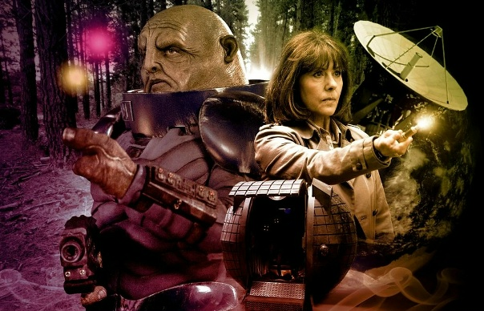

The Last Sontaran
Дата выхода: 29 сентября - 6 октября 2008
Формат: 2 эпизода по 30 мин.
| Варианты озвучек: | * Разные: смотрите по инструкции |
|---|---|
| Скачивание и просмотр: |
Сообщения о странном свечении около радио-телескопа Проекта Тайко приводят Сару Джейн и её команду на расследование деревни Роща Гоблина. Их ждёт страшная встреча в лесу - Сара Джейн сталкивается лицом к лицу с её старейшим врагом. Тем временем Мария обдумывает решение, которое изменит её жизнь.
